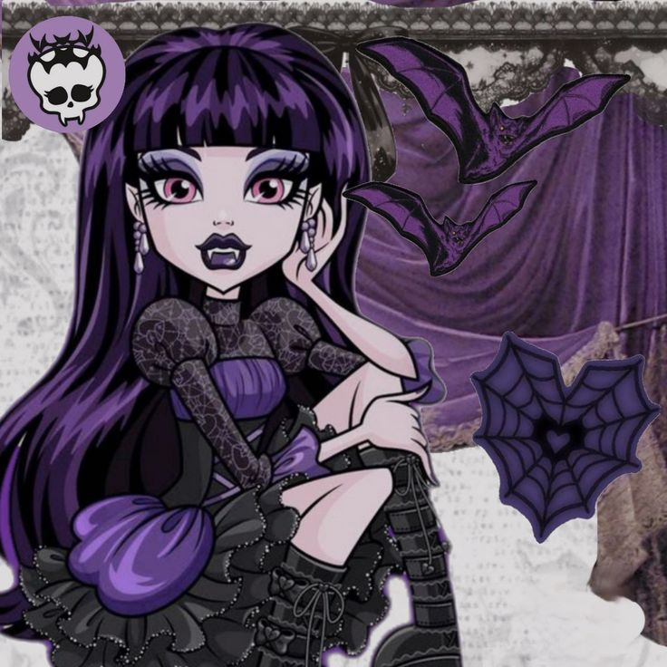
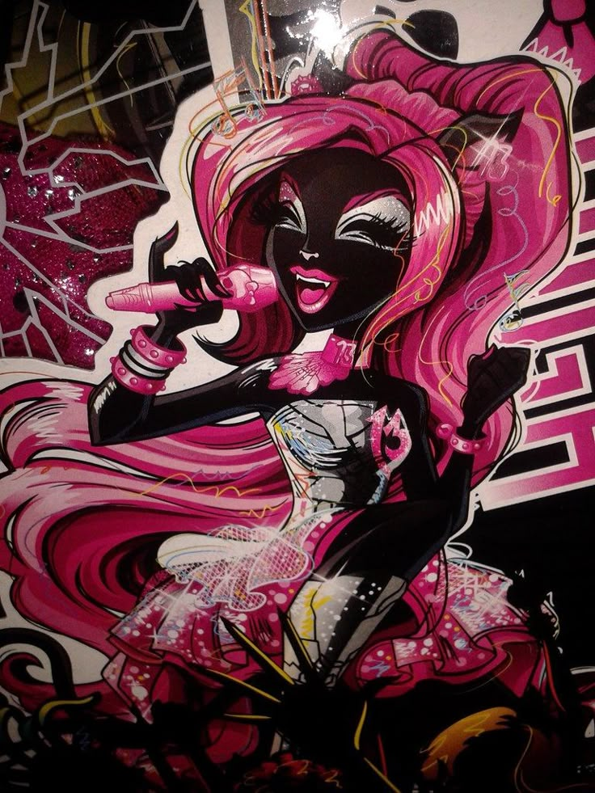
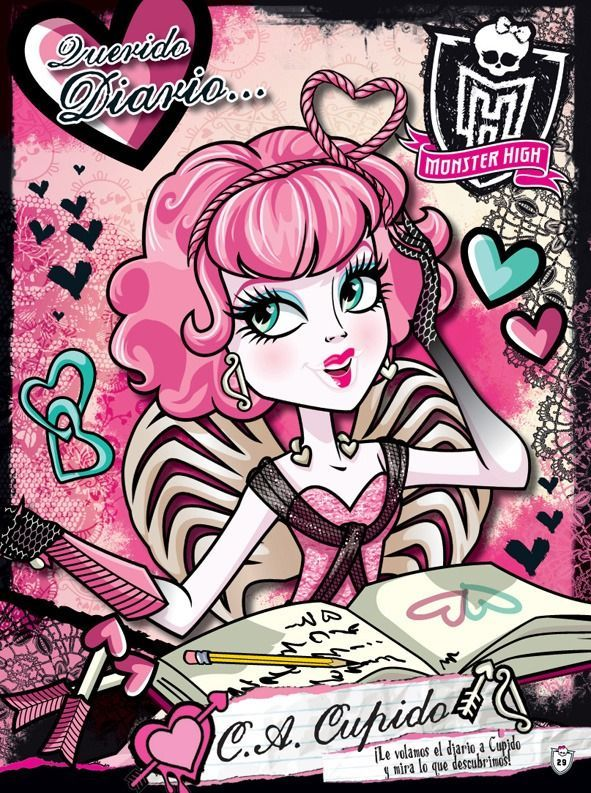

¡Prepara tus palomitas ! A continuación, te presentamos una recopilación exclusiva de las películas más icónicas de las estudiantes de Monster High. Desde misterios antiguos en las pirámides de Egipto hasta aventuras electrizantes bajo el mar, explora los diarios de rodaje y los looks cinematográficos que marcaron historia en el instituto.

(Amor Monstruoso o Un romance monstruoso)

(Escape de Playa Calavera o Espantada de la Isla Calavera)

(Una Fiesta Tenebrosa o Una Fiesta Divina de la Muerte)

(Viernes de Patinaje Terrorífico)

(Scaris: City of Frights)

(13 Deseos o 13 Monstruo-deseos)

(Sustos, Cámara, Acción!)

(Fusión monstruosa o Fusión Espeluznante)

(Embrujadas)

(Buu York: Un Musical Monstruoso)

(El Gran Arrecife Monstruoso)
Si bien la G1 en 3D tiene las premisas más icónicas de la farandula, hay sin duda otras películas que hay que mencionar. Entre ellas dos live actions siendo los mas recientes. Dicho eso, no son muy "aclamados" por los fans...



¡Psst! ¿Te cuento algo? Sabias que iban a hacer un crossover entre nuestro universo y el de "Ever after high?".